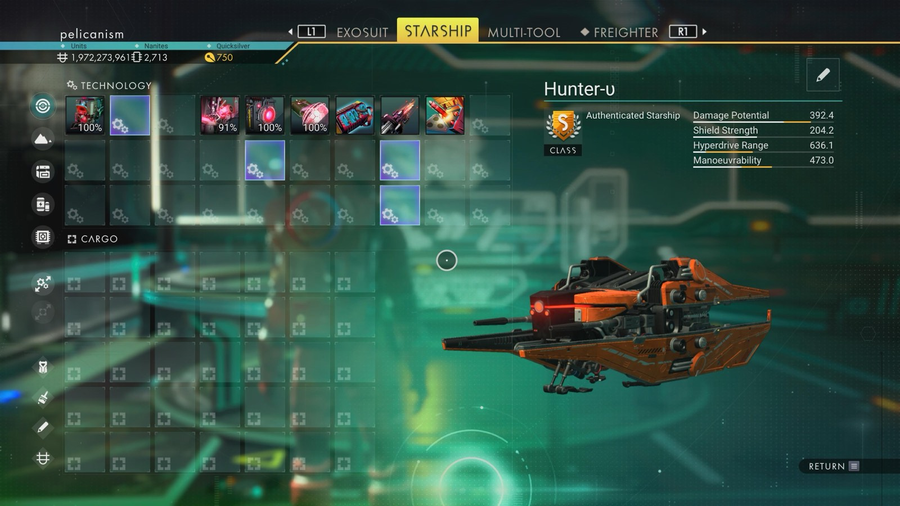

Waypoint 2
Ozlovka-Adnyem IX

- Distance from core
- 1,155,598 LY
- Jump from previous
- 1,847 LY
- Planet coordinates
- +3.69, -77.95
- Ship as found
- C-class, 35+24 slots
- S-class ship
- Hunter-υ
- Damage
- 392.4
- Shield
- 204.2
- Hyperdrive
- 636.1
- Manoeuvrability
- 473.0